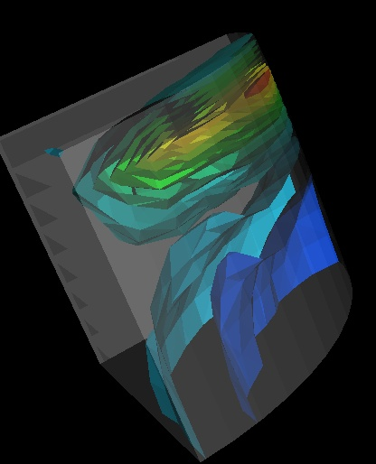

Ex:
0.body> ShowContours
0.body> numContours = 4
0.body> Update
Contour Values:
0 -0.161726
1 -0.00489312
2 0.15194
3 0.308773
4 0.465607
5 0.62244

|  | Set the number of contour lines/surfaces to be used with the "ShowContours"
command. The default number is 10. The first and last values
listed under the contour values are the min and max values for the scalar
range, and do not represent a contour line or surface.
Ex:
|